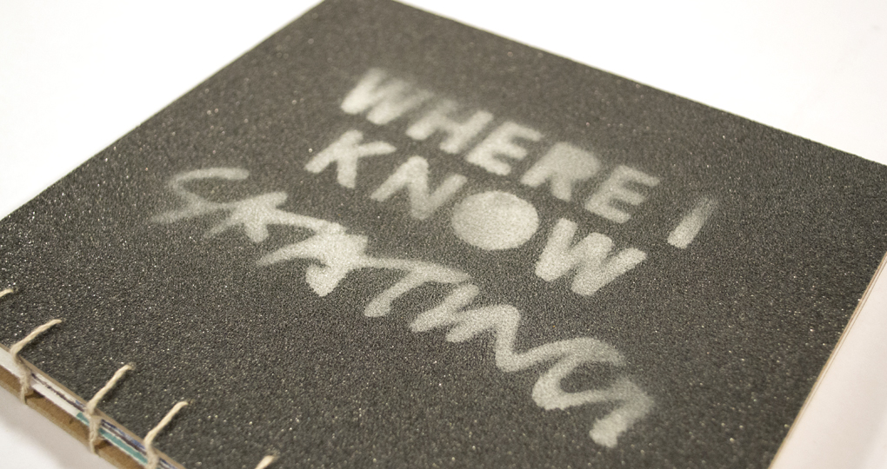
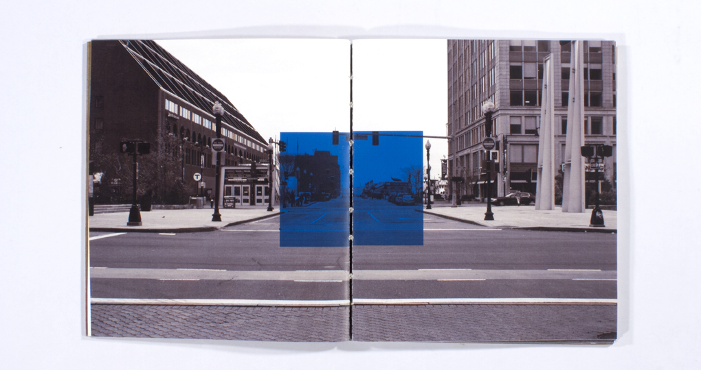
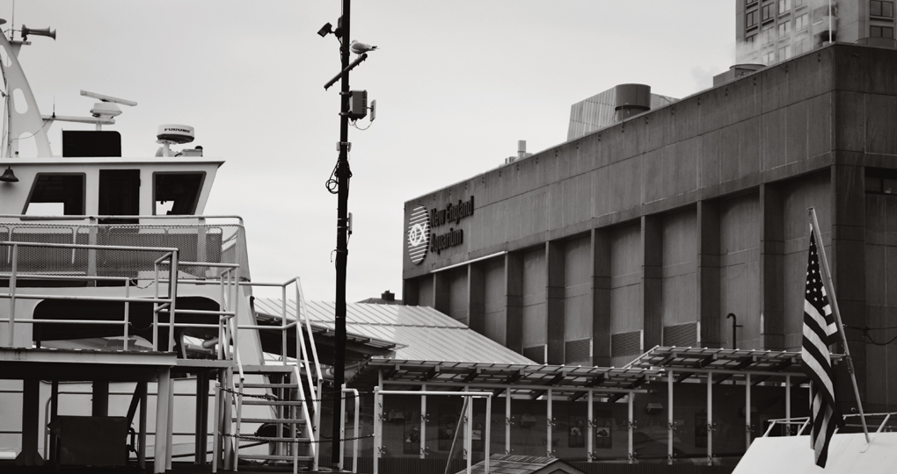
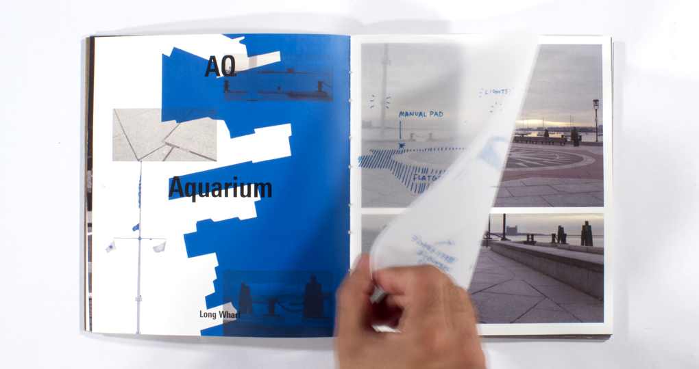
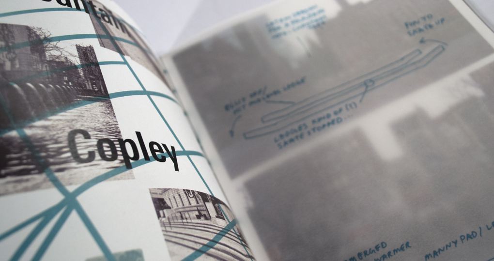
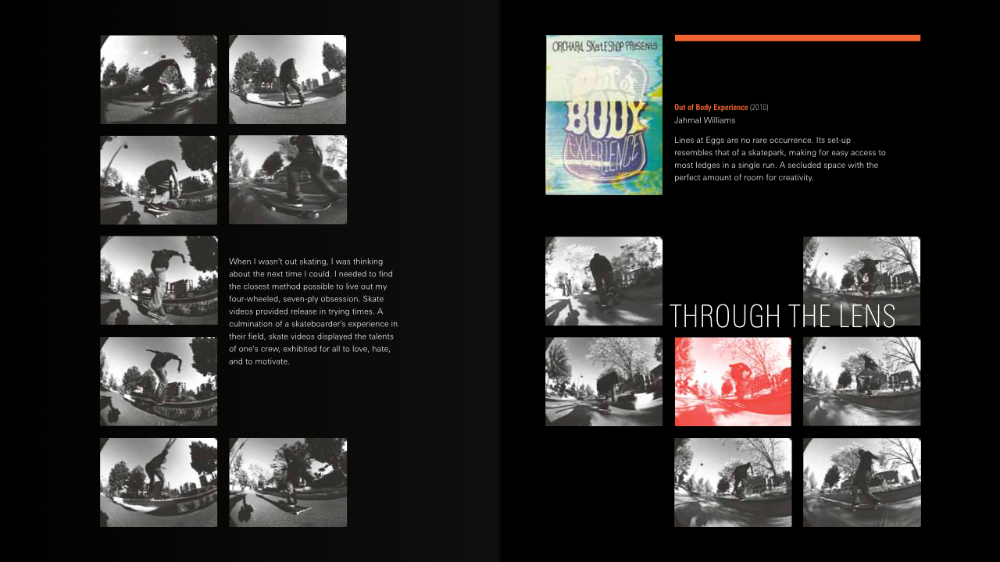
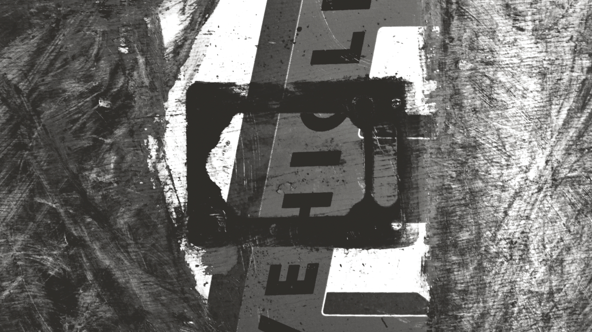
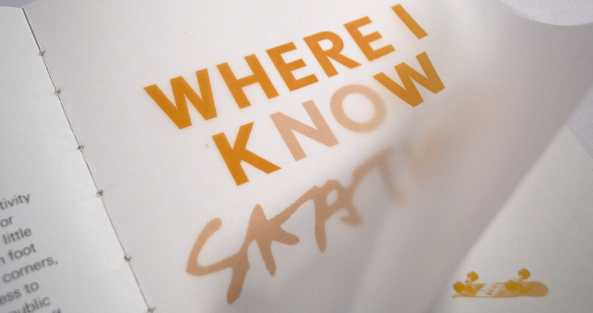
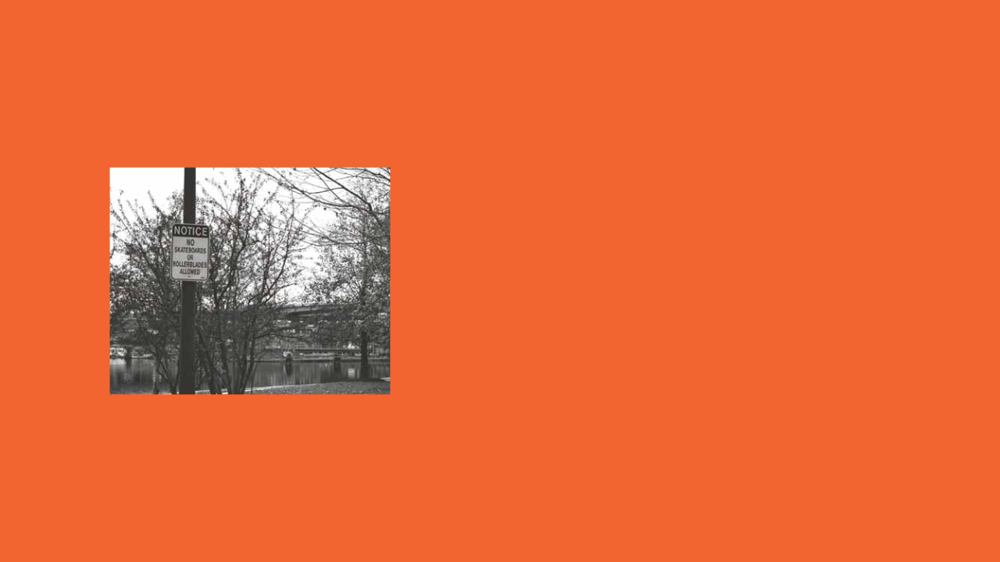

This handbound photobook illustrates the concept of skate spots to those who are not familiar.

In order to properly survey the scenes depicted, I felt it was necessary to depict spots devoid of human life.

This ghost town aesthetic is an ideal state of a skate spot since there is normally some sort of human obstacle to deal with.


I mention aspects of locations that matter to skateboarders by overlaying comments on shots of the cityscape.

With each new spot introduced, I cover a memorable "line," or series of tricks, filmed on location with a sequence of film stills.

In order to give a book the look and feel of a skateboard deck I sewed together five folios, a front and back cover, complete with griptape.

The book concludes with an essay contemplating the position of skateboarders within a society poised against their occupation of public spaces.

Words, photography, and bookbinding by Carson Halstead
An Ode to Street Skating
Skateboarding has always stood as a limitless source of creativity and inspiration.
If you had asked me ten years ago whether or not I would still be skating today, the answer would require little thought.
From humble beginnings on my backyard patio, I've graduated my way through the street corners, curbs, and basketball courts of my neighborhood.
Needless to say, not everyone is as accepting of skateboarders using public property to their advantage.
What once meant being shooed off property translates to confiscation and fines over the years.
So, inevitably, you begin to wonder where exactly it is "acceptable" to skate.
"When is that new skatepark gonna be built? You know, the one that's supposed to go in next to the Charles," said just about everyone who ever kicked you out of a spot.
Truth is, no one really knows when the Charles River Skatepark is going to break ground with construction.
Mind you, this is a project that had been announced over eight years ago by the Charles River Conservacy.
But a skatepark is one thing, a fun place to be at with a group of friends, not the end-all be-all destination.
What really bothers me is that people will often times look at skateparks and believe that this is where all skateboarders belong.
This is simply not true. It's not called "street" skating for nothing.
Skateparks offer an idealized simulation of the environments from which the activity has grown.
This is certainly a great opportunity, don't take this the wrong way.
Younger kids have a place to hone their skills and learn in a habitat where those of all ages will flock.
If a park were to pop up in the next few days, you could certainly expect to see me there.
The beautiful thing about street skateboarding is that it has no boundaries.
Boundaries only exist as imposed by an authoritative figure, primarily security guards or the cops.
Of course there are those pseudo-authority figures, the everyday vigilante citizens who think that they can kick you out of a spot over which they hold no real domain.
"This isn't a playground," says the guy with a fanny pack.
It is a different mindset.
We look at the landscape available to us and utilize its intricacies for our own benefit.
We'll take matters into our own hands to make certain features accessible.
Who else will take time from their day to fill cracks in sidewalks with autobody filler?
We are truly a devoted breed.
A real sense of community arises from the people dedicated enough to be in the streets on a day to day basis.
I've always appreciated the fact that I could leave my door and run into a crew of friends I know by the end of the night.
Skateshops foster this sense of community.
A meet up spot, a place to grab spare hardware for a quick fix, and if you're loyal, the sole provider of skate goods.
Having a local skateshop wasn't something that I had until later on, but it didn't diminish my gratitude towards its establishment.
I owe much of my skate knowledge and experience to Kevin and Steve at RAW.
That shop provided a place to mark the beginning or signal the end of a session.
Regardless of the environment, there's so much to experience when you spend time on a skateboard.